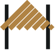
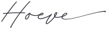
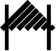

verkenning
Het huidige schuurmerk vertelt waar het bedrijf zit, niet wat het is — en een gevel met balken is het meest gekopieerde teken in de trouwbranche. Dit is de samengevoegde uitkomst van die verkenning: één voorstel voor een merkteken naast het volledige lockup, met de maten uitgemeten, de rolverdeling ten opzichte van het schuurmerk en het handschrift, en de plekken waar het terechtkomt. De R is de getekende kapitaal uit RIJLAARSDAM — geen nieuwe letter, maar een die al in de huisstijl zit.
Er zijn drie tekens en ze doen alle drie iets anders. Het handschrift spreekt — het is het enige element dat klinkt als een mens en volgens de ontwerper het hart van het logo. De R ondertekent — kort en formeel, de afzender. Het schuurmerk wijst de weg — een gebouw op afstand. Merk het verschil in richting: het handschrift loopt, de R staat, het schuurmerk is er. Per vlak kiest één stem de toon; nooit twee stemmen in één regel.


RIJLAARSDAMHet merkteken bestaat uit één lettertype: Playfair Display. De R en het woord eronder komen allebei uit RIJLAARSDAM en zijn dus familie — de streep verbindt gelijksoortige vormen. Een merk dat twee lettertypes nodig heeft is in de praktijk onwerkbaar: het is niet na te maken in een e-mailhandtekening, een Word-sjabloon of door een leverancier, en bij elke nieuwe tak moet iemand met de hand een woord tekenen. Het handschrift heeft daarom een eigen plek buiten het teken — niet erin, niet eronder.
Er is ook een harde reden. BDScript is een onvolledig font: zeven kapitalen — A C I P T U W — en ook de cijfers 2, 7 en 9 en de meeste leestekens ontbreken. Elk ontbrekend teken valt stil terug op een ander lettertype, midden in het woord. Namen als Keuken, Galerie, Events en Rijlaarsdam zijn met dit font dus niet te zetten; ze bestaan alleen als getekende vector. Het handschrift kan daarom geen namen dragen — alleen zinnen die met een van die zeven letters beginnen, of met een kleine letter.
Vier trappen, alleen de woordgrootte verandert. De maat is de hoogte van de caps ten opzichte van de hoogte van de R. Onder 20% wordt de naam een voetnoot en gaat de letter domineren; boven 32% verliest de R zijn rol als initiaal en worden het twee elementen naast elkaar. 26% is de rustigste stand: het woord heeft gewicht en de letter blijft de baas. Alles hieronder is een verhouding van één maat, dus het beeld blijft op elk formaat gelijk.
De zwevende regel is het uitgangspunt: de lucht boven de regel iets ruimer dan eronder, zodat de regel bij het woord hoort en niet aan de letter hangt. Zelfde verhouding, vier knoppen om aan te draaien. De korte regel is de zuinigste — hij hoeft niet zo breed te zijn als het woord om het woord te dragen, en houdt het merk smal. De ruime spatiëring sluit het dichtst aan op RIJLAARSDAM in het logo zelf.
De caps zijn onder 8px in druk en 10px op scherm niet meer te lezen, ook niet met minder spatiëring. Het merk valt daarom in stappen terug in plaats van door te schalen. De letter met het korte streepje doet hier het meeste werk: klein, herkenbaar, en nog altijd een merk in plaats van een losse letter.
De R blijft staan — die is van het huis en van Roos — en alleen het woord onder de regel verandert. Elke tak krijgt een eigen teken zonder dat er een tweede merk ontstaat. Dat het woord in caps staat en niet in handschrift is hier het verschil tussen een systeem en handwerk: een nieuwe tak is een kwestie van typen.
Moeten de takken fysiek uit elkaar te houden zijn — kleding, bestelbus, bordjes in de tuin — dan dragen letter en regel de kleur van de tak terwijl het woord in inkt blijft. Alleen doen als het echt nodig is: vijf kleuren maken van een familie snel een verzameling. Goud blijft van het huis.
Op donker gaat de letter naar het lichtere goud en het woord naar crème — anders valt de naamregel dicht. Goud op sage blijft verboden, ook hier.
Ze concurreren niet, want ze zeggen iets anders. Het schuurmerk is gebouwd — recht, symmetrisch, van balken; de R is getekend — met druk in de haal. De vuistregel: hoe dichter bij de gast, hoe eerder de R. Een gebouw kondigt zich aan met een gebouw; een mens ondertekent met een letter. De maatgrens beslist de rest: het schuurmerk heeft minimaal 32px nodig voordat de balken dichtlopen, de R blijft tot ver daaronder leesbaar.
| Drager | Teken | Waarom |
|---|---|---|
| Gevel, hek, bordje aan de weg | Schuurmerk | De bezoeker zoekt een plék. Het silhouet werkt op afstand en in één kleur. |
| Website — koptekst | Volledig lockup | De eerste ontmoeting; daar hoort de naam volledig te staan, niet een teken. |
| Website — voettekst, favicon | R | De naam is al gevallen. Hier volstaat de afzender. |
| Brochure, prijslijst — omslag | Schuurmerk | Het stuk gaat over de locatie; het gebouw is het onderwerp. |
| Brief, e-mail, ondertekening | R | Iemand schrijft dit. De afzender is een mens. |
| Menukaart, servet, tafelkaartje | R | Alles wat de gast in handen krijgt, komt van de keuken en de gastvrouwen. |
| Bordje in de tuin, bij een beeld | R — tak Galerie | Onderdeel van de galerie, niet van het gebouw. |
| Bestelbus, kleding, doos | R — tak | Mensen onderweg. De tak zegt wie er komt. |
| Sociale media — profielbeeld | R | Rond en klein; de balken van het schuurmerk lopen daar in elkaar. |
| Advertentie, samenwerking, pers | Volledig lockup | Buiten eigen kring moet de naam er altijd voluit bij. |
| Welkom, aanhef, proost, dank | Handschrift | Geen naam maar een uitnodiging — de enige stem die een mens laat horen. |
Op ware grootte, zodat de maatladder te controleren is. Staan het schuurmerk en de R toch op hetzelfde stuk, dan met een hele pagina of een hele zijde ertussen — kop en voet, voor- en achterkant. En waar het handschrift meedoet: de hand opent bovenaan, de R sluit af onderaan.

Het voorstel in het kort. Een merkteken naast het lockup: de R uit RIJLAARSDAM met een zwevende regel eronder, caps op 26% van de letterhoogte, regel op ongeveer 62% van de woordbreedte, spatiëring .3em. Alles in Playfair Display — het teken heeft nooit een tweede lettertype nodig. Twee vaste terugvalstanden: letter met kort streepje tussen 20 en 40px, kale letter daaronder. De takken delen de letter en wisselen alleen het woord; kleur per tak is een middel voor fysieke dragers, geen uitgangspunt. Drie standen naast elkaar: lockup waar de naam voor het eerst valt, schuurmerk waar de plek het onderwerp is, R op alles wat een mens overhandigt of ondertekent en op alles wat klein moet. Het handschrift houdt zijn eigen taak: alles wat de gast aanspreekt — welkom, aanhef, proost, dank. Nooit alle drie op één vlak, en nooit twee stemmen in één regel.